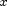
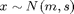

getPlotDistr_cdp.m
Summary: Compute means and covariances of the Cartesian coordinates of the tips both the inner and outer pendulum assuming that the joint state  of the cart-double-pendulum system is Gaussian, i.e., 
function [M1, S1, M2, S2] = getPlotDistr_cdp(m, s, ell1, ell2)
Input arguments:
m mean of full state [6 x 1] s covariance of full state [6 x 6] ell1 length of inner pendulum ell2 length of outer pendulum
Note: this code assumes that the following order of the state: 1: cart pos., 2: cart vel., 3: pend1 angular velocity, 4: pend2 angular velocity, 5: pend1 angle, 6: pend2 angle
Output arguments:
M1 mean of tip of inner pendulum [2 x 1] S1 covariance of tip of inner pendulum [2 x 2] M2 mean of tip of outer pendulum [2 x 1] S2 covariance of tip of outer pendulum [2 x 2]
Copyright (C) 2008-2013 by Marc Deisenroth, Andrew McHutchon, Joe Hall, and Carl Edward Rasmussen.
Last modification: 2013-03-06
Contents
High-Level Steps
- Augment input distribution to complex angle representation
- Compute means of tips of pendulums (in Cartesian coordinates)
- Compute covariances of tips of pendulums (in Cartesian coordinates)
function [M1, S1, M2, S2] = getPlotDistr_cdp(m, s, ell1, ell2)
Code
% 1. Augment input distribution (complex representation) [m1 s1 c1] = gTrig(m, s, [5 6], [ell1, ell2]); % map input through sin/cos m1 = [m; m1]; % mean of joint c1 = s*c1; % cross-covariance between input and prediction s1 = [s c1; c1' s1]; % covariance of joint % 2. Mean of the tips of the pendulums (Cart. coord.) M1 = [m1(1) - m1(7); m1(8)]; % p2: E[x -l1\sin\theta_2]; E[l2\cos\theta_2] M2 = [M1(1) - m1(9); M1(2) + m1(10)]; % p3: mean of cart. coord. % 2. Put covariance matrices together (Cart. coord.) % first set of coordinates (tip of 1st pendulum) S1(1,1) = s1(1,1) + s1(7,7) -2*s1(1,7); S1(2,2) = s1(8,8); S1(1,2) = s1(1,8) - s1(7,8); S1(2,1) = S1(1,2)'; % second set of coordinates (tip of 2nd pendulum) S2(1,1) = S1(1,1) + s1(9,9) + 2*(s1(1,9) - s1(7,9)); S2(2,2) = s1(8,8) + s1(10,10) + 2*s1(8,10); S2(1,2) = s1(1,8) - s1(7,8) - s1(9,8) ... + s1(1,10) - s1(7,10) - s1(9,10); S2(2,1) = S2(1,2)'; % make sure we have proper covariances (sometimes numerical problems occur) try chol(S1); catch warning('matrix S1 not pos.def. (getPlotDistr)'); S1 = S1 + (1e-6 - min(eig(S1)))*eye(2); end try chol(S2); catch warning('matrix S2 not pos.def. (getPlotDistr)'); S2 = S2 + (1e-6 - min(eig(S2)))*eye(2); end